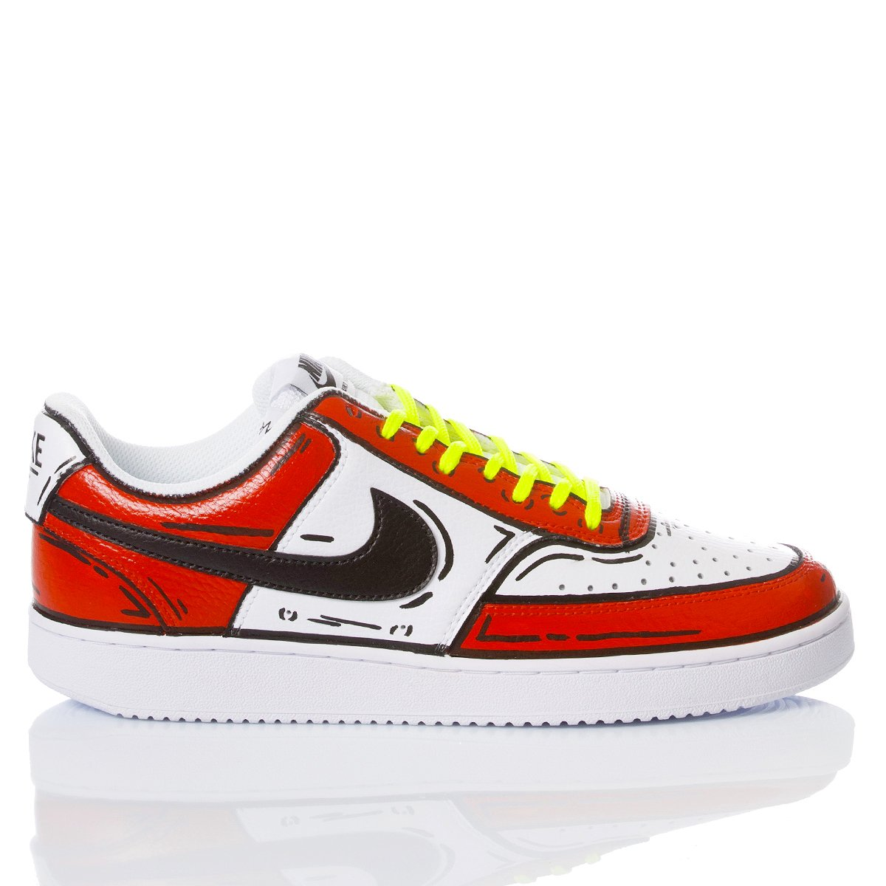
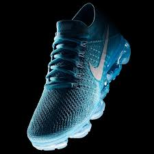
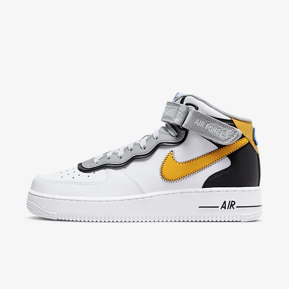

Air Jordan 1 Retro High OG
THE ICONIC 1.
Familiar but always fresh, the iconic Air Jordan 1 is remastered for today's sneakerhead culture. This Retro High OG version goes all in with premium leather, comfortable cushioning and classic design details.
Air Inside
The Air-Sole unit in the heel provides the same lightweight cushioning that MJ enjoyed back in his playing days.
Luxe Leather
Genuine leather in the upper provides durability and structure with a luxe touch. A textile tongue feels soft and comfortable over the top of your foot.
Classic CupsoleWings logo on side

Jordan .5 'Why Not?'
WHY NOT?
Russell Westbrook is fast. These shoes match his quickness with updated cushioning, data-informed traction and a full-foot fit system to keep him in control. With a rugged utility look combined with a purposeful clash of colours and materials, this model speaks to the core of Russel's "Why Not?" mantra.
Energy In the Forefoot
A large-volume Zoom Air unit in the forefoot helps maximise energy return for your explosive bursts of speed.
Webbing Fit System
Floating midfoot bands, an external heel counter, webbing and laces work together to fully secure your foot.
Rugged, Multi-directional Traction
The durable rubber outsole has a rugged, data-informed traction pattern inspired by trail running shoes.

Air Jordan 1 Mid SE
SIEMPRE FAMILIA.
Inspired by Mictlán, this is a story of family connections. This unique "Día de Muertos" version of the Air Jordan 1 stays true to style with a bright jaguar print and unique details, like a multi-coloured embroidered Swoosh logo with an arrow. The words "Siempre" and "Familia" stamped on the upper connect back to the family tradition.

Jordan One Take 3 PF
Basketball Shoe
Burn up the court like Russell Westbrook.Inspired by his latest game shoe, the outsole of the Jordan One Take 3 PF lets you easily change direction or stop in a flash.Push the tempo like Russ with energy-returning Zoom Air cushioning that lets you take jump shots and rebound again and again.This PF version uses an extra-durable outsole that's ideal for outdoor courts.